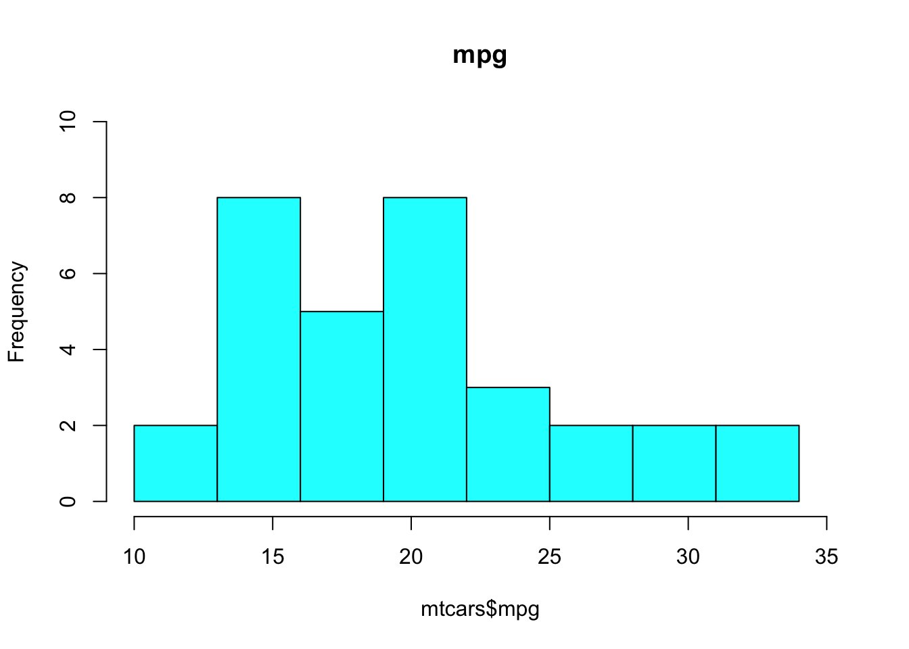
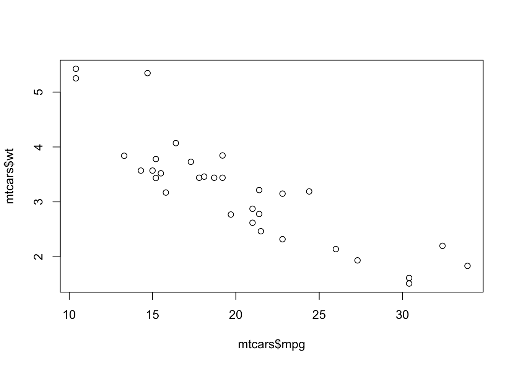

# 赋值符：左箭头<-
# 快捷键Windows系统：Alt + -
# 快捷键Mac系统：Option + -
a <- 1
a[1] 1# 赋值符：左箭头<-
# 快捷键Windows系统：Alt + -
# 快捷键Mac系统：Option + -
a <- 1
a[1] 1# = 也可以赋值，但是不推荐使用
# = 用于给函数的参数赋值
round(pi, digits = 2)[1] 3.14# 加法
2+3[1] 5# 减法
2-3[1] -1# 乘法
2*3[1] 6# 除法
9 / 2[1] 4.5# 次方
2 ^ 3[1] 8# 取余
9 %% 2[1] 1# 整除
9 %/% 2[1] 4# 自然对数
log(2)[1] 0.6931472# 以10为底的对数
log10(2)[1] 0.30103# 平方根
sqrt(2)[1] 1.414214# 绝对值
abs(-2)[1] 2# 向上取整
ceiling(2.1)[1] 3# 向下取整
floor(2.1)[1] 2# 四舍五入
round(2.1)[1] 2# 圆周率
pi[1] 3.141593# 圆周率保留6位小数
round(pi,6)[1] 3.141593# 生成100个在0至1之间均匀分布的随机数
runif(100)
# 生成100个服从标准正态分布的随机数
rnorm(100)
# 生成100个服从泊松分布的随机数
rpois(100,lambda=2)x <- rnorm(1000, mean = 10, sd = 2)
mean(x)[1] 9.990032median(x)[1] 9.993999sd(x)[1] 1.975407var(x)[1] 3.902234range(x)[1] 4.102839 16.475634quantile(x) 0% 25% 50% 75% 100%
4.102839 8.749513 9.993999 11.340625 16.475634 summary(x) Min. 1st Qu. Median Mean 3rd Qu. Max.
4.103 8.750 9.994 9.990 11.341 16.476 # 等于
2 == 3[1] FALSE# 不等于
2 != 3[1] TRUE# 大于
2 > 3[1] FALSE# 小于
2 < 3[1] TRUE# 大于等于
2 >= 3[1] FALSE# 小于等于
2 <= 3[1] TRUEdata(mtcars)
mtcars mpg cyl disp hp drat wt qsec vs am gear carb
Mazda RX4 21.0 6 160.0 110 3.90 2.620 16.46 0 1 4 4
Mazda RX4 Wag 21.0 6 160.0 110 3.90 2.875 17.02 0 1 4 4
Datsun 710 22.8 4 108.0 93 3.85 2.320 18.61 1 1 4 1
Hornet 4 Drive 21.4 6 258.0 110 3.08 3.215 19.44 1 0 3 1
Hornet Sportabout 18.7 8 360.0 175 3.15 3.440 17.02 0 0 3 2
Valiant 18.1 6 225.0 105 2.76 3.460 20.22 1 0 3 1
Duster 360 14.3 8 360.0 245 3.21 3.570 15.84 0 0 3 4
Merc 240D 24.4 4 146.7 62 3.69 3.190 20.00 1 0 4 2
Merc 230 22.8 4 140.8 95 3.92 3.150 22.90 1 0 4 2
Merc 280 19.2 6 167.6 123 3.92 3.440 18.30 1 0 4 4
Merc 280C 17.8 6 167.6 123 3.92 3.440 18.90 1 0 4 4
Merc 450SE 16.4 8 275.8 180 3.07 4.070 17.40 0 0 3 3
Merc 450SL 17.3 8 275.8 180 3.07 3.730 17.60 0 0 3 3
Merc 450SLC 15.2 8 275.8 180 3.07 3.780 18.00 0 0 3 3
Cadillac Fleetwood 10.4 8 472.0 205 2.93 5.250 17.98 0 0 3 4
Lincoln Continental 10.4 8 460.0 215 3.00 5.424 17.82 0 0 3 4
Chrysler Imperial 14.7 8 440.0 230 3.23 5.345 17.42 0 0 3 4
Fiat 128 32.4 4 78.7 66 4.08 2.200 19.47 1 1 4 1
Honda Civic 30.4 4 75.7 52 4.93 1.615 18.52 1 1 4 2
Toyota Corolla 33.9 4 71.1 65 4.22 1.835 19.90 1 1 4 1
Toyota Corona 21.5 4 120.1 97 3.70 2.465 20.01 1 0 3 1
Dodge Challenger 15.5 8 318.0 150 2.76 3.520 16.87 0 0 3 2
AMC Javelin 15.2 8 304.0 150 3.15 3.435 17.30 0 0 3 2
Camaro Z28 13.3 8 350.0 245 3.73 3.840 15.41 0 0 3 4
Pontiac Firebird 19.2 8 400.0 175 3.08 3.845 17.05 0 0 3 2
Fiat X1-9 27.3 4 79.0 66 4.08 1.935 18.90 1 1 4 1
Porsche 914-2 26.0 4 120.3 91 4.43 2.140 16.70 0 1 5 2
Lotus Europa 30.4 4 95.1 113 3.77 1.513 16.90 1 1 5 2
Ford Pantera L 15.8 8 351.0 264 4.22 3.170 14.50 0 1 5 4
Ferrari Dino 19.7 6 145.0 175 3.62 2.770 15.50 0 1 5 6
Maserati Bora 15.0 8 301.0 335 3.54 3.570 14.60 0 1 5 8
Volvo 142E 21.4 4 121.0 109 4.11 2.780 18.60 1 1 4 2# 报告mtcars描述性统计量
summary(mtcars) mpg cyl disp hp
Min. :10.40 Min. :4.000 Min. : 71.1 Min. : 52.0
1st Qu.:15.43 1st Qu.:4.000 1st Qu.:120.8 1st Qu.: 96.5
Median :19.20 Median :6.000 Median :196.3 Median :123.0
Mean :20.09 Mean :6.188 Mean :230.7 Mean :146.7
3rd Qu.:22.80 3rd Qu.:8.000 3rd Qu.:326.0 3rd Qu.:180.0
Max. :33.90 Max. :8.000 Max. :472.0 Max. :335.0
drat wt qsec vs
Min. :2.760 Min. :1.513 Min. :14.50 Min. :0.0000
1st Qu.:3.080 1st Qu.:2.581 1st Qu.:16.89 1st Qu.:0.0000
Median :3.695 Median :3.325 Median :17.71 Median :0.0000
Mean :3.597 Mean :3.217 Mean :17.85 Mean :0.4375
3rd Qu.:3.920 3rd Qu.:3.610 3rd Qu.:18.90 3rd Qu.:1.0000
Max. :4.930 Max. :5.424 Max. :22.90 Max. :1.0000
am gear carb
Min. :0.0000 Min. :3.000 Min. :1.000
1st Qu.:0.0000 1st Qu.:3.000 1st Qu.:2.000
Median :0.0000 Median :4.000 Median :2.000
Mean :0.4062 Mean :3.688 Mean :2.812
3rd Qu.:1.0000 3rd Qu.:4.000 3rd Qu.:4.000
Max. :1.0000 Max. :5.000 Max. :8.000 #查看R自带的数据集
library(help = "datasets")# 箱线图
boxplot(mtcars$mpg)
# 箱线图自定义标题，边框，填充颜色，水平放置
boxplot(mtcars$mpg, main = "mpg",
border = "gray", col = "cyan", horizontal = TRUE)# 直方图
hist(mtcars$mpg)
# 直方图自定义标题，边框，填充颜色，组距
hist(mtcars$mpg, main = "mpg", breaks = seq(10,34,3),
border = "black",col = "cyan", xlim = c(10,35), ylim = c(0,10))
# 散点图
plot(mtcars$mpg,mtcars$wt)
# 折线图
plot(mtcars$mpg,type="l")# 安装包
# install.packages("psych")
# 加载包
library(psych)
describe(mtcars$mpg) vars n mean sd median trimmed mad min max range skew kurtosis se
X1 1 32 20.09 6.03 19.2 19.7 5.41 10.4 33.9 23.5 0.61 -0.37 1.07psych::describe(mtcars$mpg) vars n mean sd median trimmed mad min max range skew kurtosis se
X1 1 32 20.09 6.03 19.2 19.7 5.41 10.4 33.9 23.5 0.61 -0.37 1.07psych::describe(mtcars) vars n mean sd median trimmed mad min max range skew
mpg 1 32 20.09 6.03 19.20 19.70 5.41 10.40 33.90 23.50 0.61
cyl 2 32 6.19 1.79 6.00 6.23 2.97 4.00 8.00 4.00 -0.17
disp 3 32 230.72 123.94 196.30 222.52 140.48 71.10 472.00 400.90 0.38
hp 4 32 146.69 68.56 123.00 141.19 77.10 52.00 335.00 283.00 0.73
drat 5 32 3.60 0.53 3.70 3.58 0.70 2.76 4.93 2.17 0.27
wt 6 32 3.22 0.98 3.33 3.15 0.77 1.51 5.42 3.91 0.42
qsec 7 32 17.85 1.79 17.71 17.83 1.42 14.50 22.90 8.40 0.37
vs 8 32 0.44 0.50 0.00 0.42 0.00 0.00 1.00 1.00 0.24
am 9 32 0.41 0.50 0.00 0.38 0.00 0.00 1.00 1.00 0.36
gear 10 32 3.69 0.74 4.00 3.62 1.48 3.00 5.00 2.00 0.53
carb 11 32 2.81 1.62 2.00 2.65 1.48 1.00 8.00 7.00 1.05
kurtosis se
mpg -0.37 1.07
cyl -1.76 0.32
disp -1.21 21.91
hp -0.14 12.12
drat -0.71 0.09
wt -0.02 0.17
qsec 0.34 0.32
vs -2.00 0.09
am -1.92 0.09
gear -1.07 0.13
carb 1.26 0.29# 查看包的信息
sessionInfo()R version 4.4.2 (2024-10-31)
Platform: aarch64-apple-darwin20
Running under: macOS Sequoia 15.1.1
Matrix products: default
BLAS: /Library/Frameworks/R.framework/Versions/4.4-arm64/Resources/lib/libRblas.0.dylib
LAPACK: /Library/Frameworks/R.framework/Versions/4.4-arm64/Resources/lib/libRlapack.dylib; LAPACK version 3.12.0
locale:
[1] en_US.UTF-8/en_US.UTF-8/en_US.UTF-8/C/en_US.UTF-8/en_US.UTF-8
time zone: Asia/Shanghai
tzcode source: internal
attached base packages:
[1] stats graphics grDevices utils datasets methods base
other attached packages:
[1] psych_2.4.3
loaded via a namespace (and not attached):
[1] digest_0.6.35 fastmap_1.2.0 xfun_0.50 lattice_0.22-6
[5] knitr_1.46 parallel_4.4.2 htmltools_0.5.8.1 rmarkdown_2.26
[9] cli_3.6.2 grid_4.4.2 mnormt_2.1.1 compiler_4.4.2
[13] rstudioapi_0.16.0 tools_4.4.2 nlme_3.1-166 evaluate_0.23
[17] yaml_2.3.8 rlang_1.1.4 jsonlite_1.8.8 htmlwidgets_1.6.4# 查看包的版本
packageVersion("psych")[1] '2.4.3'# 查看包的作者
packageDescription("psych")$Author[1] "William Revelle [aut, cre] (<https://orcid.org/0000-0003-4880-9610>)"# 显示R包存储在计算机上的位置
.libPaths()[1] "/Library/Frameworks/R.framework/Versions/4.4-arm64/Resources/library"# 查看已安装的包
library()
# 查看已加载的包
search() [1] ".GlobalEnv" "package:psych" "package:stats"
[4] "package:graphics" "package:grDevices" "package:utils"
[7] "package:datasets" "package:methods" "Autoloads"
[10] "package:base" #频繁使用psych
library(psych)
describe(mtcars$mpg) vars n mean sd median trimmed mad min max range skew kurtosis se
X1 1 32 20.09 6.03 19.2 19.7 5.41 10.4 33.9 23.5 0.61 -0.37 1.07describeBy(mtcars$mpg, group = mtcars$cyl)
Descriptive statistics by group
group: 4
vars n mean sd median trimmed mad min max range skew kurtosis se
X1 1 11 26.66 4.51 26 26.44 6.52 21.4 33.9 12.5 0.26 -1.65 1.36
------------------------------------------------------------
group: 6
vars n mean sd median trimmed mad min max range skew kurtosis se
X1 1 7 19.74 1.45 19.7 19.74 1.93 17.8 21.4 3.6 -0.16 -1.91 0.55
------------------------------------------------------------
group: 8
vars n mean sd median trimmed mad min max range skew kurtosis se
X1 1 14 15.1 2.56 15.2 15.15 1.56 10.4 19.2 8.8 -0.36 -0.57 0.68#偶尔使用psych
psych::describe(mtcars$mpg) vars n mean sd median trimmed mad min max range skew kurtosis se
X1 1 32 20.09 6.03 19.2 19.7 5.41 10.4 33.9 23.5 0.61 -0.37 1.07psych::describeBy(mtcars$mpg, group = mtcars$cyl)
Descriptive statistics by group
group: 4
vars n mean sd median trimmed mad min max range skew kurtosis se
X1 1 11 26.66 4.51 26 26.44 6.52 21.4 33.9 12.5 0.26 -1.65 1.36
------------------------------------------------------------
group: 6
vars n mean sd median trimmed mad min max range skew kurtosis se
X1 1 7 19.74 1.45 19.7 19.74 1.93 17.8 21.4 3.6 -0.16 -1.91 0.55
------------------------------------------------------------
group: 8
vars n mean sd median trimmed mad min max range skew kurtosis se
X1 1 14 15.1 2.56 15.2 15.15 1.56 10.4 19.2 8.8 -0.36 -0.57 0.68# 查看函数帮助文档
?describe
# 查看包帮助文档
?psych
# 查看数据集帮助文档
?mtcars# install.packages("writexl")
library(writexl)
# 导出的Exel文件放在项目/工作路径中，否则需要写出完整路径
write_xlsx(mtcars, "mtcars.xlsx")# install.packages("export")
library(export)
# 自定义散点图点的颜色、边框、形状、大小、标题
plot(mtcars$mpg,mtcars$wt,col="red",pch=19,cex=2,main="mpg")# 导出的图形放在项目/工作路径中，否则需要写出完整路径
png("mtcars.png")